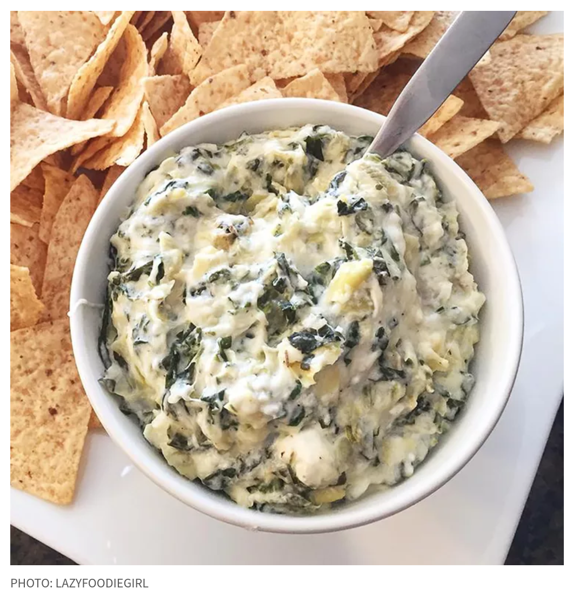

SPINACH ARTICHOKE DIP

DESCRIPTION
You'll find the full, step-by-step recipe below — but here's a brief overview of what you can expect when you make this crowd-pleasing spinach artichoke dip:
1. Mix all the ingredients (except for the mozzarella) together.
2. Transfer the mixture to a prepared baking dish. Top with cheese.
3. Bake the spinach artichoke dip in the preheated oven until bubbly.
Ingredients
- 1 package cream cheese , softened
- 1/4 cup mayonnaise
- 1/4 cup parmesan cheese
- ¼ cup grated Romano cheese
- 1 clove garlic, peeled and minced
- 1/2 teaspoon dried basil
- 1/2teaspoon garlic salt
- salt and pepper to taste
- 1 (14 ounce) can artichoke hearts, drained and chopped
- 1/2 cup frozen chopped spinach, thawed and drained
- 1/2 cup shredded mozzarella cheese
Steps
- Preheat the oven to 350 degrees F (175 degrees C). Lightly grease a small baking dish.
- Mix cream cheese, mayonnaise, Parmesan cheese, Romano cheese, garlic, basil, garlic salt, salt, and pepper together in a medium bowl.
Gently stir in artichoke hearts and spinach.
- Transfer the mixture to the prepared baking dish; top with mozzarella cheese. Bake in the preheated oven until bubbly and lightly browned,
about 25 minutes.